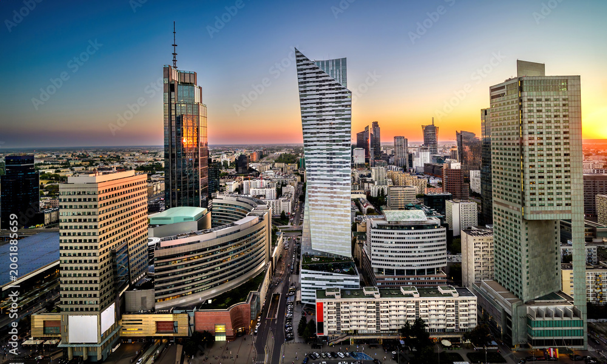
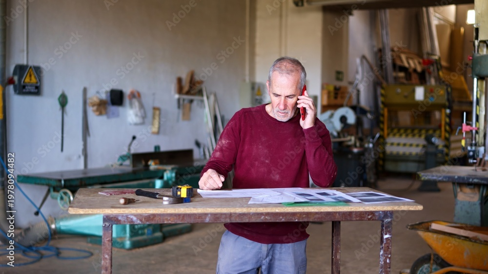

Finansowanie dla spółek i JDG
Finansowanie dopasowane do sytuacji przedsiębiorstwa
Planujesz inwestycję, realizujesz duży kontrakt albo chcesz poprawić płynność firmy? Sprawdzimy, jakie możliwości finansowania są dostępne dla Twojej spółki lub JDG. Porównujemy oferty banków, funduszy i firm pożyczkowych, zamiast proponować pierwszy dostępny produkt. Zaczynamy od Twoich celów biznesowych – dopiero później szukamy odpowiedniego źródła kapitału.

Z czym możesz się do nas zgłosić?
-

Inwestycja
Kapitał na rozwój firmy, zakup nieruchomości, gruntu lub realizację większego projektu.
-

Płynność
Środki na bieżące zobowiązania, zakup towaru lub realizację kontraktu.
-

Obecne finansowanie
Analiza kredytów, linii i factoringu oraz sprawdzenie innych możliwości dostępnych na rynku.
-

Odmowa banku
Weryfikacja alternatywnych kierunków, jeśli standardowa ścieżka bankowa nie jest obecnie dostępna.
Nie musisz wiedzieć, jaki rodzaj finansowania będzie najlepszy dla Twojej firmy.
Opowiedz nam o swoich planach, potrzebnej kwocie i sytuacji przedsiębiorstwa. Przeanalizujemy dostępne możliwości, uwzględniając zarówno Twoje cele biznesowe, jak i warunki oferowane przez poszczególne instytucje.
Jakie możliwości możemy sprawdzić?
Kredyty firmowe
Linie w rachunku
Factoring
Finansowanie pod zastaw nieruchomości
Finansowanie z funduszy
Masz już finansowanie?
Kredyt, który odpowiadał potrzebom Twojej firmy kilka lat temu, niekoniecznie musi być najlepszym wyborem dzisiaj. Jeśli Twoja działalność się rozwija lub zmieniła się jej sytuacja finansowa, możemy przyjrzeć się dotychczasowym zobowiązaniom i sprawdzić, jakie możliwości oferuje obecnie rynek.
Przeanalizujemy:
- warunki obecnych kredytów,
- możliwość refinansowania,
- możliwość konsolidacji części zobowiązań,
- dostęp do dodatkowego kapitału,
- inne źródła finansowania dostępne na rynku.

Spółka czy JDG?
-

Spółki
Finansowanie bieżącej działalności, inwestycji oraz większych transakcji.
-

Jednoosobowe działalności gospodarcze
Możliwości bankowe i pozabankowe dobierane m.in. do sytuacji firmy, celu i potrzebnej kwoty.
Jak wygląda współpraca?
Analizujemy potrzeby
Ustalamy kwotę, cel finansowania i sytuację przedsiębiorstwa.
Sprawdzamy rynek
Porównujemy możliwości dostępne w różnych instytucjach.
Prowadzimy sprawę
Kompletujemy potrzebne dokumenty i wspieramy klienta aż do uruchomienia finansowania.
FAQ – najczęściej zadawane pytania
Czy pomagacie tylko firmom po odmowie banku?
Nie. Współpracujemy również z przedsiębiorstwami w dobrej sytuacji, które planują inwestycję lub chcą przeanalizować obecne finansowanie.
Czy firma musi posiadać nieruchomość?
Nie. Nieruchomość jest potrzebna przy finansowaniu zabezpieczonym hipoteką, ale nie przy każdym produkcie.
Czy można przeanalizować już posiadane kredyty?
Tak. Możemy sprawdzić obecne finansowanie oraz dostępne możliwości refinansowania, konsolidacji lub pozyskania dodatkowych środków.
Porozmawiajmy o finansowaniu dla Twojej firmy
Masz konkretny plan biznesowy i szukasz kapitału na jego realizację? A może chcesz sprawdzić, czy obecne finansowanie nadal odpowiada potrzebom Twojego przedsiębiorstwa? Przedstaw nam swoją sytuację. Pomożemy Ci przeanalizować dostępne źródła finansowania i ustalić, które z nich warto wziąć pod uwagę.